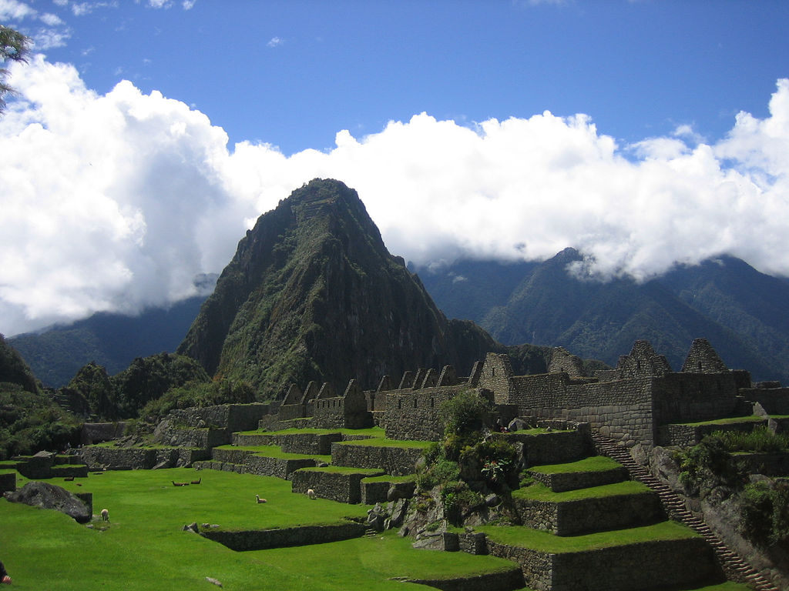
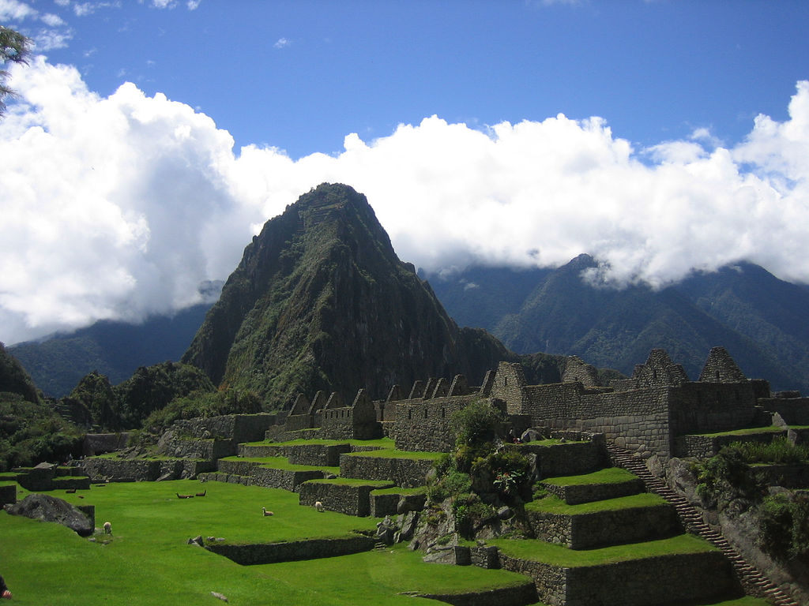
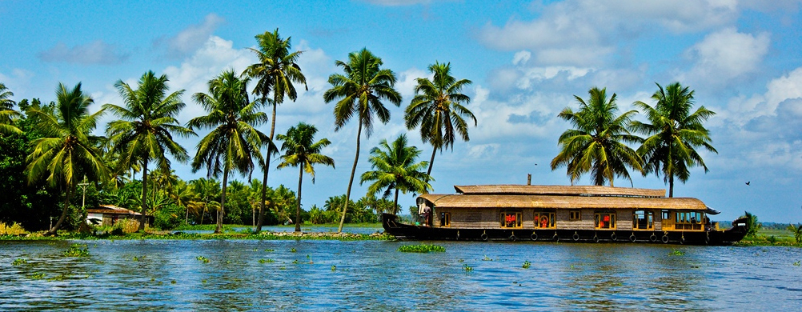
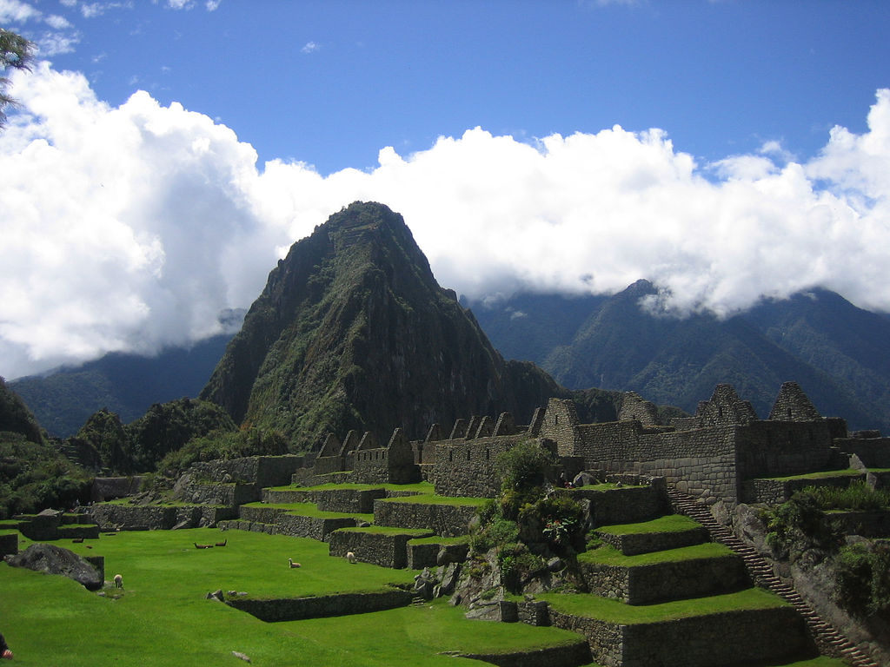
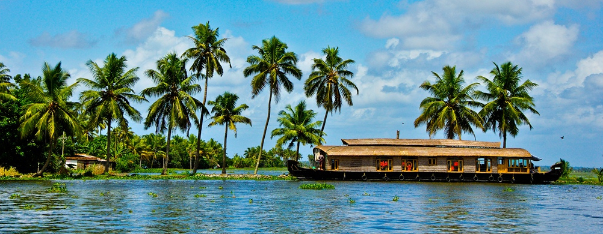
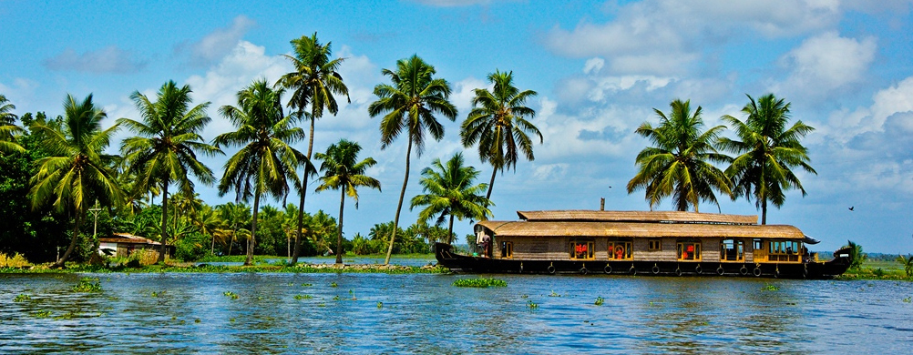
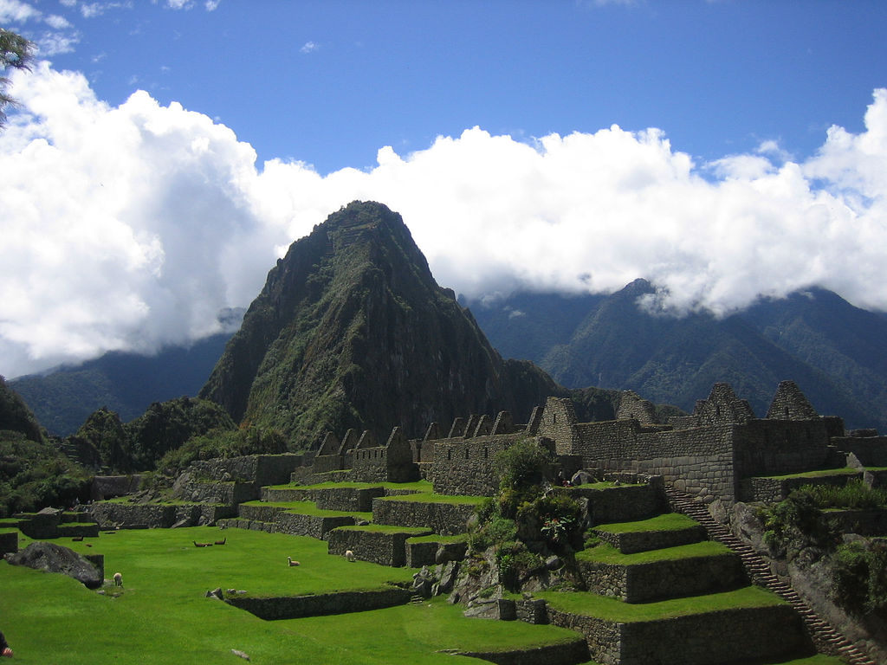
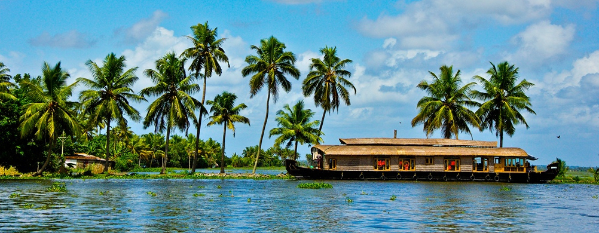

 





I have always wanted to travel! Are you like me? Then you would absolutely love this site.
What is it that we want to know when we travel? We would want to know the place better, right?
What is the history of the place? What's the weather like? Where should I eat? What are the places
worth visiting? All the answers to all the above questions would be answered at a single place!
Let me introduce you to Travel Diaries! Find everything you want to know about the place!
So you didnt check it before you traveled! I know your kind! You can check it based on your current
location too!
Go ahead! TRAVEL...!!!